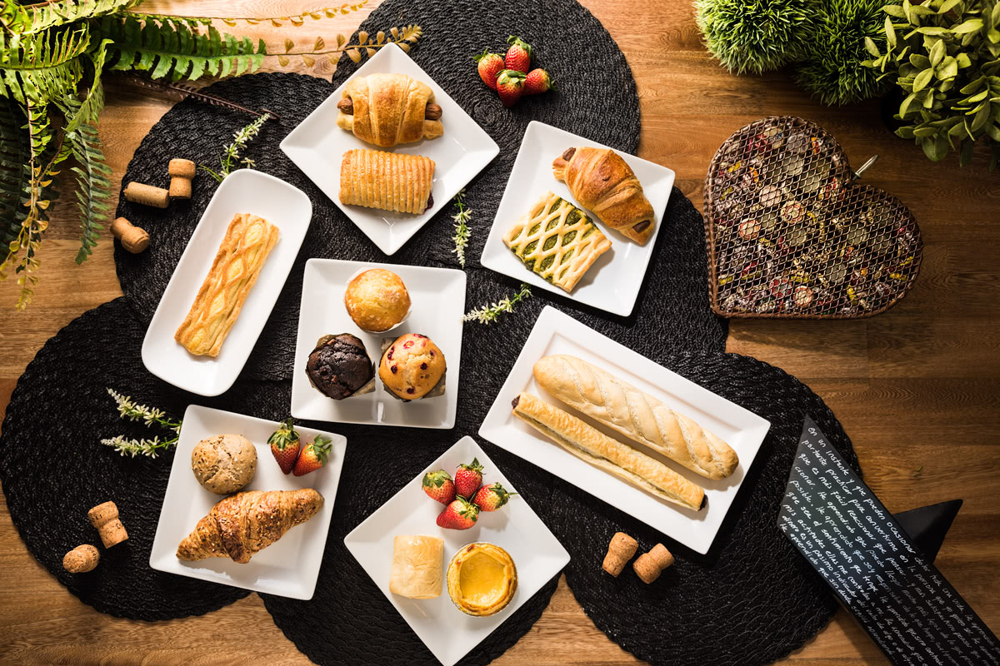

- 
-

1. Me gusta hacer pan porque residimos cursos de panadería los años anteriores y como aquí en la casa tenemos horno los días sábados con mis primos realizamos panes y abecés hacemos madalenas para la familia.
2. Me gusta mucho jugar futbol, los días domingo voy con mis amigos al campo a jugar pelota porque jugando uno se entretiene y disfruta con los amigos jugando pelota.
3. Me gusta mucho estudiar ingle porque me dieron la oportunidad de seguir unos cursos en Higa, la verdad que me cuesta un poco pero me entretengo leyendo libros y mirando películas y eso lo hago en las mañana y le dedico una hora para estudiar un poco y recordarme de las palabras.
4. Mi pasatiempo favorito es ver videos de programación y después que lo veo lo práctico, para así aprender un poco más y eso lo hago todos los días en las mañana, y avece no puedo porque ayudo a mi papá a trabajar y no me queda tiempo, y me gusta mucho porque quiero seguir algún día ingeniería en sistemas.